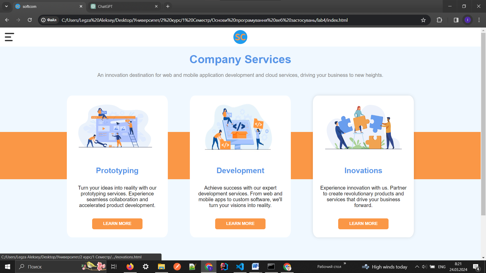
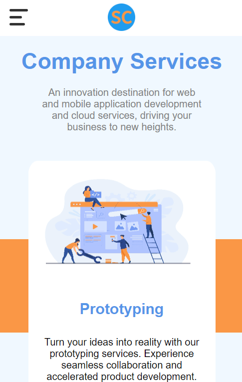
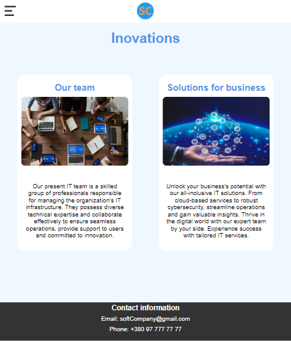

ЗВІТИ З ЛАБОРАТОРНИХ РОБІТ З ДИСЦИПЛІНИ "WEB-ОРІЄНТОВАНІ ТЕХНОЛОГІЇ. Основни FRONTEND та BACKEND РОЗРОБОК"

- Опис предметного середовища
- Адаптивна верстка. Медіа-запити. Медіа-типи. Медіа-функції.Метатег viewport. Інструменти розробника. Стратегія Mobile First.
- Використовуючі медіа-запити та СSS- правила: Десктопної версії
- Використовуючі медіа-запити та СSS- правила: Планшетної версії
- Використовуючі медіа-запити та СSS- правила: Мобільної версії
- В процесі розробки адаптивної верстки, бли застосовані логічні оператори
- Висновок: У цій лабораторній роботі ми дослідили техніки адаптивної верстки, використовуючи медіа-запити та стратегію Mobile First. За допомогою CSS правил і логічних операторів ми створили різні версії сайту для десктопу, планшету та мобільних пристроїв. Використання медіа-запитів дозволяє нам налаштовувати розміщення та вигляд елементів в залежності від розміру екрану, щоб забезпечити оптимальний досвід користувача на різних пристроях. Ми також використовували метатег viewport для коректного відображення сайту на мобільних пристроях. Стратегія Mobile First дозволяє нам спочатку розробляти версію сайту для мобільних пристроїв, а потім додавати стилі для більших екранів. Це підходить для сучасних веб-розробок, оскільки все більше користувачів використовують мобільні пристрої для перегляду веб-сайтів. У результаті ми набули практичних навичок з адаптивної верстки і засвоїли важливі концепції, які допоможуть нам створювати сучасні та дружні до користувача веб-сайти.
Підготовка робочого середовища: Створення нового HTML-документа для лабораторної роботи. Підключення CSS-файлу для стилізації.
Розмітка основної структури HTML: Створення загальної структури HTML-документа. Додавання необхідних тегів для контенту.
Створення стилів для десктопної версії: Використання CSS для створення стилів, які будуть застосовуватися на десктопних пристроях. Визначення ширини контейнера, розташування елементів, кольори тощо.
Додавання медіа-запитів для планшетної та мобільної версій: Використання медіа-запитів у CSS для визначення стилів для планшетних та мобільних пристроїв. Визначення конкретних розмірів екрану, на яких будуть застосовуватися нові стилі. Зміна розташування, розмірів та інших властивостей елементів для планшетної та мобільної версій.
Застосування стратегії Mobile First: Спочатку розробляти стилі для мобільних пристроїв, а потім додавати медіа-запити для планшетів і десктопів. Використання мінімально необхідних стилів для мобільних пристроїв, щоб забезпечити швидку та оптимізовану загрузку.
Тестування та налагодження: Перевірка адаптивної верстки на різних пристроях та в різних браузерах. Виправлення будь-яких проблем або недоліків у відображенні на різних пристроях.
Оформлення звітного HTML-документа: Додавання у звіт HTML-документ пояснень щодо розробки десктопної, планшетної та мобільної версій. Оформлення звітного документа відповідно до вимог викладача або стандартів установи.
  